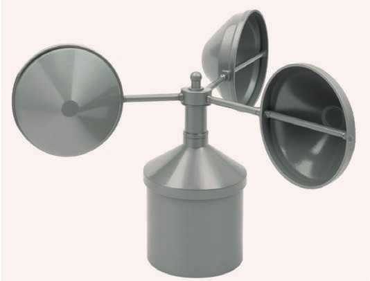

Upepo
Upepo hutokea kutokana na tofauti za mgandamizo wa hewa katika anga. Hivyo, upepo ni hewa inayojongea kutoka maeneo yenye mgandamizo mkubwa kwenda maeneo yenye mgandamizo mdogo. Mfano, ukichukua mpira uliojazwa hewa, kisha ukautoboa kwa sindano, hewa iliyomo ndani ya mpira itatoka nje ya mpira kwa kasi. Hali hii hutokea kwa sababu kwenye mpira kuna mgandamizo mkubwa wa hewa kuliko nje ya mpira huo. Hivyo, hewa iliyomo ndani ya mpira (kwenye mgandamizo mkubwa) itatoka nje ya mpira (kwenye mgandamizo mdogo).
Upimaji wa upepo
Upepo unapovuma kuna vitu viwili ambavyo tunaviona. Vitu hivyo ni mwelekeo wa upepo na kasi ya upepo. Katika mazingira ya kawaida unaweza kutambua mwelekeo wa upepo kwa kuangalia upande miti au majani yanapoinamia. Kasi ya upepo unaweza kuitambua kwa kuangalia kiwango cha kuyumba kwa miti, majani au kupeperushwa kwa vitu mbalimbali. Kwa uhakika zaidi, ili kujua uelekeo na kasi ya upepo vipo vifaa maalumu vya kupimia. Kifaa kinachotumika kupima kasi ya upepo kinaitwa anemometa na kifaa kinachotumika kupima mwelekeo wa upepo kinaitwa kipima upepo.
Anemometa
Hiki ni kifaa ambacho kina vikombe vitatu au vinne vyenye umbo la bakuli vilivyoshikiliwa na mikono ya chuma ambavyo huzunguka upepo unapovuma. Kasi ya mzunguko wa vikombe inaonesha kasi ya upepo. Idadi ya mizunguko hurekodiwa kwenye mita iliyopo katika chombo hicho. Kasi ya upepo hupimwa kwa kilomita kwa saa. Kielelezo namba 3 kinawasilisha anemometa.
